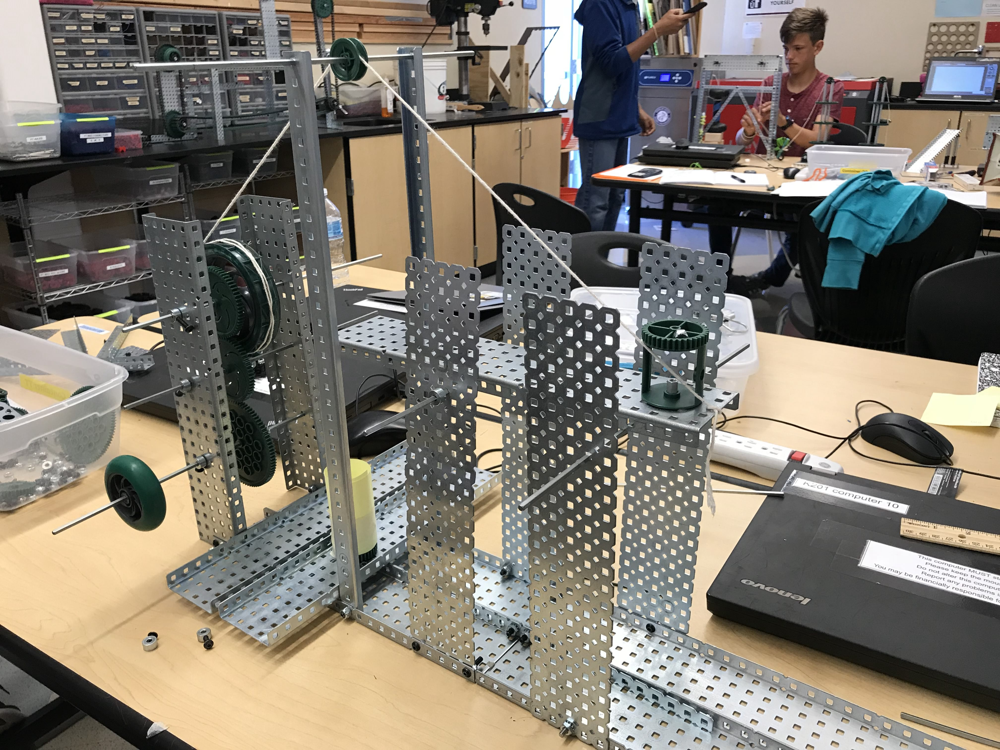

Dodgeball in Scratch
CSE: Scratch Project

The objective of this project was to make a game using scratch. My partner and I decided to make a sidescrolling dodgeball arcade game. The controls use the arrow keys, and the spacebar to shoot. The bosses get harder and stronger every level so there's a sense of progression as well. This project was a way to further our understanding about code and understand how the basic underlying functions work. My specific role in the project was to work on documentation, but I ended up doing the majority of the coding as well. From this project, I learned how basic code functions worked and saw how to put them all together to create an end product that functions and can be enjoyed. Some challenges that we had to overcome were the difficulties of trying to work with two people who had their own opinions and agreeing one idea to use as the end product. All in all, it was a great learning experience, and I learned a lot about coding and cooperating with others as well.
Hangman in Python
CSE: Python Project

The objective of this project was to make a game of Hangman in python. My partner and I chose to make a game with a space theme where you need to guess the word from a list of words related to space. There's about 17 words in total. The project was a fun way to learn about Python and how it works, but also a great introduction to coding using lists and dictionaries as well. It teaches us more about variable roles and functions as well, as they were pretty important in this project. In this project, I did most of the documentation for our notebook, but did a significiant amount of coding as well. This project taught me a lot about how difficult it is to iterate through lists and dictionaries using mulitple functions. There's a lot that can happen, and I learned that bug testing is pretty difficult if code isn't organized very well. Some challenges that we had to overcome was as I said earlier, organization of our code in order to find where the bugs were that were ruining our code. Overall however, it was a fun project and I actually learned quite a lot from the experience of coding it. It was also a fun game to play in itself!
Compound Machine Design
POE: Build Project 9/7/18
Documentation
The objective of this project was to design, build, test a prototype that completes an everyday task with only a single input of motion to power the whole mechanism. Our group decided to create a machine which would dispense dog food by a simple crank that the dog itself could turn to dispense itself food when its owners are not home. The four mechanisms we used to achieve this design, was the wheel as a crank, a simple gear train, a pulley, and a final lever that actually dumps the food itself into the bowl. For this project, I was the Project Manager, so I was in charge of overseeing the design process, and assigning tasks to my group. I also contributed significiantly to the building itself, but I specifically did most of the project documentation. I took pictures, noted any modifications, and kept track of the design process over time. The hardest part about this project was having to lead a group of people, as I have had little leadership experience prior to this project. In terms of building, the biggest challenge was connecting so many different parts together and trying to think things through to the point where you aren't having to take stuff apart in order to make minor edits. Overall, I learned a lot from this project. I learned a lot about how to be a leader, and how to organize a group of people while still respecting their opinions and ideas. I also learned about how the build and design process works in action, as this was my first project building something with such a short time constraint.
West Point Bridge Design
POE: Design Project 3/7/19
Documentation

The objective of this project was to design, build, and test a prototype for a bridge in a simulation running on the West Point Design Software. The bridge was not supposed to be more expensive than $300,000 while still maintaining structural integrity and holding a firm position as it was subjected to a load. This project was a partner project, meaning that two people worked together to come up with two different bridge designs each. Then, they must assess the different qualities of their designs and have to pick one design that is the most efficient out of them all and choose to proceed with that one to add any final modifications to it. During this project, I quickly became familiar with the software at first and began experimenting with different designs straight off the bat. The hardest part of designing was to budget costs effectively in such a way where the bridge still had stability to carry a truck across it. This required a lot of sacrifices in terms of scaling the bridge. My main responsibility for this project was to be in charge of documentation. Through this I quickly realized the importance of research in design, as I was in charge of searching up different designs of bridges and learning about them. I used several designs as my inspiration for my own personal designs, and they proved to be pretty successful.